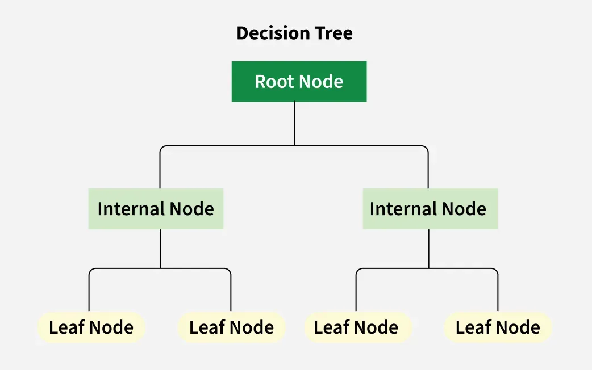
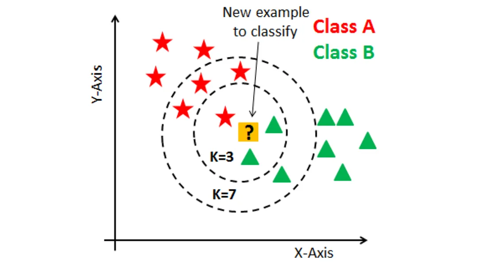

iPAS AI應用規劃師 考試重點
L11302 常見的機器學習模型 (Common Machine Learning Models)
主題分類
1
監督式學習模型
2
非監督式學習模型
3
模型評估與選擇概念
#1
★★★★★
線性迴歸 (Linear Regression)
核心概念
用於預測連續數值的監督式學習模型。它假設輸入特徵和輸出標籤之間存在線性關係。目標是找到一條最能擬合數據點的直線（或超平面）。例如：預測房價、銷售額。(樣題 #8) (對應能力 K05)

#2
★★★★
邏輯迴歸 (Logistic Regression)
核心概念
雖然名稱有"迴歸"，但主要用於二元分類 (Binary Classification) 問題的監督式學習模型。它使用 Sigmoid 函數將線性組合的輸出轉換為介於 0 和 1 之間的機率值，代表屬於某個類別的可能性。例如：判斷客戶是否會流失、預測病人是否患有某種疾病。 (對應能力 K05)

#3
★★★★
決策樹 (Decision Tree)
核心概念
一種樹狀結構的監督式學習模型，其中每個內部節點代表一個特徵測試，每個分支代表測試的結果，每個葉節點代表一個類別標籤（分類樹）或數值（迴歸樹）。易於理解和解釋。 (對應能力 K05)

#4
★★★
隨機森林 (Random Forest)
核心概念
一種集成學習 (Ensemble Learning) 方法，透過建立多個決策樹並將它們的預測結果進行組合（例如投票或平均），以提高預測的準確性和穩健性，並減少過度擬合。可用於分類和迴歸。(樣題 #22 D選項提及) (對應能力 K05)

#5
★★★
支持向量機 (SVM, Support Vector Machine)
核心概念
一種監督式學習模型，主要用於分類，也可以用於迴歸。其目標是找到一個能夠最大化不同類別數據點之間邊界（間隔）的超平面。在高維空間和非線性問題中表現良好。(樣題 #14 C選項提及) (對應能力 K05)

#6
★★
K-近鄰演算法 (KNN, K-Nearest Neighbors)
核心概念
一種簡單的監督式學習演算法，可用於分類和迴歸。它基於「物以類聚」的思想，新數據點的預測結果取決於其在特徵空間中最接近的 K 個鄰居的標籤（分類）或平均值（迴歸）。 (對應能力 K05)

#7
★★★★★
K-平均演算法 (K-Means Clustering)
核心概念
一種常用的非監督式學習中的分群演算法。目標是將數據點劃分為 K 個互斥的群集，使得同一個群集內的數據點盡可能相似（距離近），而不同群集之間的數據點盡可能不同（距離遠）。需要預先指定群集數量 K。(樣題 #5) (對應能力 K05)

#8
★★★
主成分分析 (PCA, Principal Component Analysis)
核心概念
一種常用的非監督式學習中的降維技術。它透過線性變換將原始高維數據投影到一個新的低維空間（由主成分構成），同時最大程度地保留原始數據的變異性。 (對應能力 K05, K11)

#9
★★
階層式分群 (Hierarchical Clustering)
核心概念
一種非監督式學習的分群方法，它建立一個群集的層級結構（樹狀圖 Dendrogram）。可以是凝聚式（從單個點開始合併）或分裂式（從所有點開始分裂）。不需要預先指定群集數量。 (對應能力 K05)

#10
★★★★★
模型評估的重要性
核心概念
理解對機器學習模型進行客觀評估是至關重要的，目的是了解模型在未見數據上的泛化能力，比較不同模型的性能，並確保模型符合預期目標。 (對應能力 K05, S03)
#11
★★★★
混淆矩陣 (Confusion Matrix) (概念)
核心概念
了解混淆矩陣是評估分類模型性能的常用工具，它展示了模型預測結果與實際標籤之間的關係，包含真陽性 (TP)、真陰性 (TN)、偽陽性 (FP)、偽陰性 (FN) 四個基本計數，許多評估指標（如準確率、精確率、召回率）都基於它計算。 (對應能力 K05, K11)

#12
★★★
模型選擇考量因素
核心概念
認識到選擇合適的機器學習模型需要考慮多種因素，包括問題類型（分類、迴歸、分群）、資料特性（大小、維度、類型）、模型性能需求（準確度、速度）、模型可解釋性要求、計算資源限制等。 (對應能力 K05, S03, S04)
#13
★★★
偏差-方差權衡 (Bias-Variance Tradeoff) (概念)
核心概念
理解模型預測誤差的兩個主要來源：偏差（模型預測值與真實值的系統性差異，高偏差=不足擬合）和方差（模型在不同訓練集上預測結果的變動性，高方差=過度擬合）。通常降低一方會導致另一方升高，需要在兩者間取得平衡以達到最佳泛化性能。 (對應能力 K05, K12)

沒有找到符合條件的重點。
↑